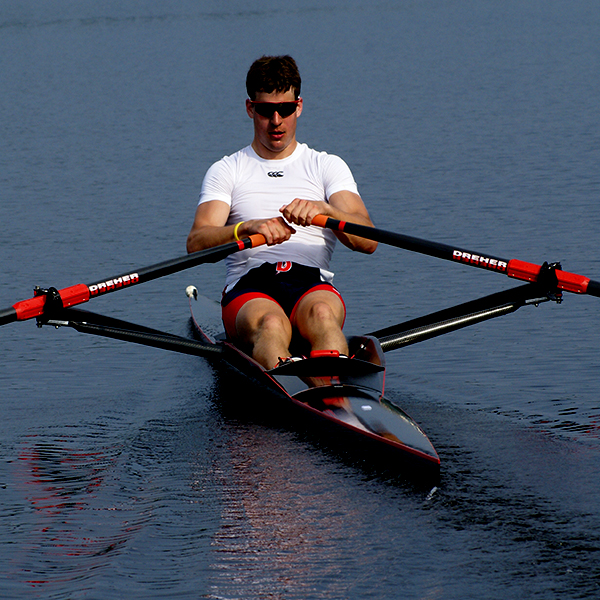

The Sport of Rowing
What Is Rowing?
Rowing is a sport where athletes use oars to move a boat through the water. Crews can have different numbers of rowers, with each person working together to keep the boat moving efficiently. Success depends on strength, endurance, timing, and teamwork.

Why I Like Rowing
I enjoy rowing because it combines individual effort with teamwork. Every rower has to do their part, but the entire crew has to move together. This makes rowing different from many other sports because even a strong individual performance is not enough if the crew is not working together.
Rowing also gives me a clear way to measure improvement. Training can be difficult, but seeing progress over time makes the work feel worthwhile.
Types of Rowing Training
- On-water rowing
- Indoor ergometer workouts
- Steady-state endurance training
- High-intensity intervals
- Strength training
- Technical drills
Indoor Rowing
Indoor rowing is usually done on an ergometer, which is a machine designed to simulate the motion of rowing a boat. Ergometer workouts are useful because they allow athletes to train regardless of weather or water conditions.

Indoor rowing can also provide detailed measurements of a workout. Athletes can track how much power they produce and how long they can maintain a certain effort.
Important Rowing Measurements
- Distance measures how far the athlete has rowed.
- Time measures how long the workout takes.
- Watts measure the power being produced.
- Stroke rate measures how many strokes are taken per minute.
Teamwork
Teamwork is one of the most important parts of rowing. A crew has to communicate and stay synchronized throughout a race or practice. Small differences in timing can affect how efficiently the boat moves through the water.
What Rowing Has Taught Me
Rowing has taught me that improvement usually comes from being consistent. A single difficult workout does not make someone better by itself. Progress comes from continuing to train, learning from mistakes, and making small improvements over time.
The sport has also taught me how to work with other people. Everyone in a boat has a role, and the crew performs best when everyone is committed to doing their part.
Conclusion
Rowing is a challenging sport that combines endurance, strength, technique, and teamwork. It has become an important part of my life and has taught me lessons that can apply both in and outside of sports.